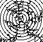

| First, we review the basics of box-counting dimension. | |
| Similarity dimension is a
simplified method of computing
dimensions for self-similar fractals with all pieces scaled by the same factor. This dimension gives
a clear indication of the relation between dimension and complexity. |
|
| The Moran formula extends
the similarity dimension
fromula to self-similar fractals with different scaling factors. |
|
| Other dimensions.
Among several variants, we study the
mass dimension, a measure of how the mass of an object scales with the size of the object. Objects with
hierarchical structures, dust clumps and natural sponges, for example, typically have non-integer mass
dimensions. |
 |